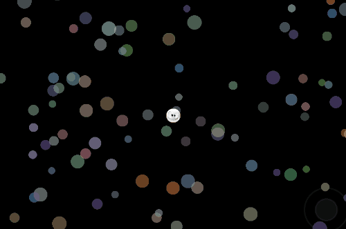

Camera Library (ssk.camera.*)
A number of basic cameras you can use out-of-the-box, or that you can copy and modify to meet your specific game requirements/

| delayedTracking | tracking |
| trackingLooseCircle | trackingLooseRectangle |
tracking
A camera that tracks the position of the trackObj exactly, keeping it in the exact position it started in or has specified to be at.
This camera supports the ability to track in only one axis and/or to adjust the tracking offset.
ssk.camera.tracking( trackObj, world [ , params ] )
trackObj- The object to track with the camera.world- The group that contains all other groups and objects includingtrackObj.params- An optional table of named settings:centered(false) - Iftrue, forces camera tracking to center of screen.lockX(false) - Iftrue, tracking ignores x-movement.lockY(false) - Iftrue, tracking ignores y-movement.lx- If specified, this is the x-position to track at.- Defaults to starting x-position of
trackObj.
- Defaults to starting x-position of
ly- If specified, this is the y-position to track at.- Defaults to starting y-position of
trackObj.
- Defaults to starting y-position of
-- Create some basic layers.
--
local layers = quickLayers( group,
"underlay",
"world",
{ "circles", "player" },
"overlay" )
local player = newImageRect( layers.player, centerX, centerY, "images/smiley.png" )
ssk.camera.tracking( player, layers.world )
delayedTracking
An experimental camera that waits a moment then moves to the new position of the trackObj.
Note: I don't use this one. It is meant to be a starting place for delayed cameras. If you need such a camera, examine this code and then write your own camera function.
ssk.camera.delayedTracking( )
trackObj- The object to track with the camera.world- The group that contains all other groups and objects includingtrackObj.params- An optional table of named settings:centered(false) - Iftrue, forces camera tracking to center of screen.lockX(false) - Iftrue, tracking ignores x-movement.lockY(false) - Iftrue, tracking ignores y-movement.lx- If specified, this is the x-position to track at.- Defaults to starting x-position of
trackObj.
- Defaults to starting x-position of
ly- If specified, this is the y-position to track at.- Defaults to starting y-position of
trackObj.
- Defaults to starting y-position of
trackingLooseCircle

A camera that tracks the trackObj continuously, but only moves the world once the trackObj moves beyond the radius of a dead zone. After that, world movement accelerates gradually to match that of trackObj.
Includes a debug feature to allow you to see the limits of the dead zone.
ssk.camera.trackingLooseCircle( trackObj, world [ , params ] )
trackObj- The object to track with the camera.world- The group that contains all other groups and objects includingtrackObj.params- An optional table of named settings:debugEn(false) - Enable debug feedback (see summary above).deadRadius(100) - Radius of dead zone.bufferSize(50) - Width of zone outsidedeadRadiuswhere camera starts to move.- Camera will be moving at same rate as
trackObjonce that object is atdeadRadius+bufferSizedistance from camera center.
- Camera will be moving at same rate as
trackingLooseRectangle
A camera that tracks the trackObj continuously, but only moves the world once the trackObj moves beyond the bounds of a rectangular dead zone. After that, world movement accelerates gradually to match that of trackObj.
ssk.camera.trackingLooseRectangle( trackObj, world [ , params ] )
trackObj- The object to track with the camera.world- The group that contains all other groups and objects includingtrackObj.params- An optional table of named settings:boundarySize(100) - Pixel width of boudary.- The tracking rectangle is centered on the screen and has a width and height equal to the
fullw - boundarySizeandfullh - boundarySizerespectively.
- The tracking rectangle is centered on the screen and has a width and height equal to the
minDelta(0.2) - Controls sensitivity of movement when boundary is encountered.
 Copyright © Roaming Gamer, LLC. 2008-2016; All Rights Reserved
Copyright © Roaming Gamer, LLC. 2008-2016; All Rights Reserved